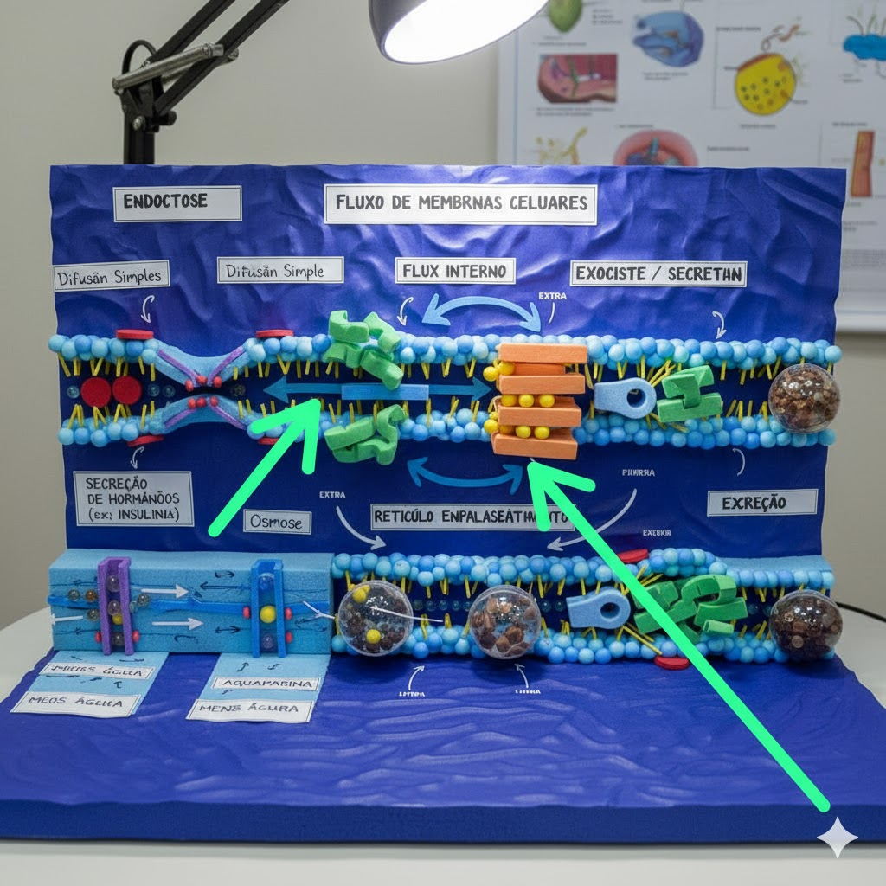

O que é o fluxo de membranas?
O fluxo de membranas é o transporte dinâmico de lipídios e proteínas por vesículas entre compartimentos celulares — por exemplo do retículo endoplasmático ao complexo de Golgi, e deste até a membrana plasmática. Esse processo garante secreção, reciclagem e manutenção da célula.
- Importante para secreção de hormônios e enzimas;
- Permite reciclagem de receptores e remoção de resíduos;
- Base para comunicação celular (neurotransmissão).

biomaket do grupo
Vídeo explicativo do projeto
o video a seguir explica o assunto que seja abordado na biomaket.